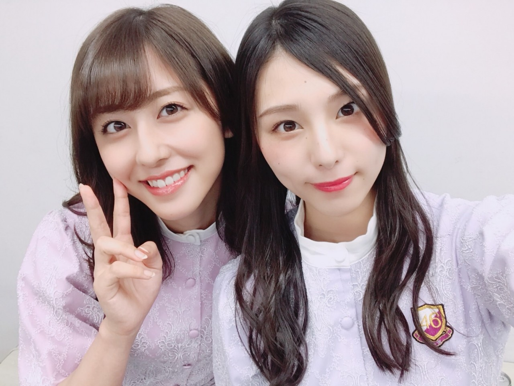
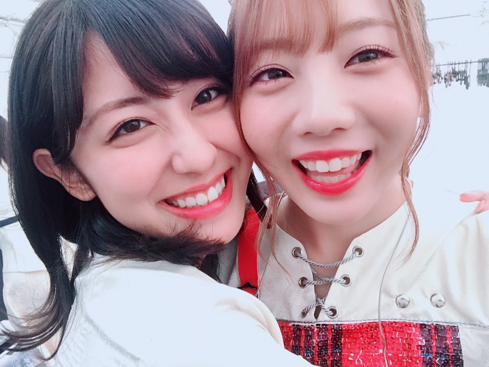
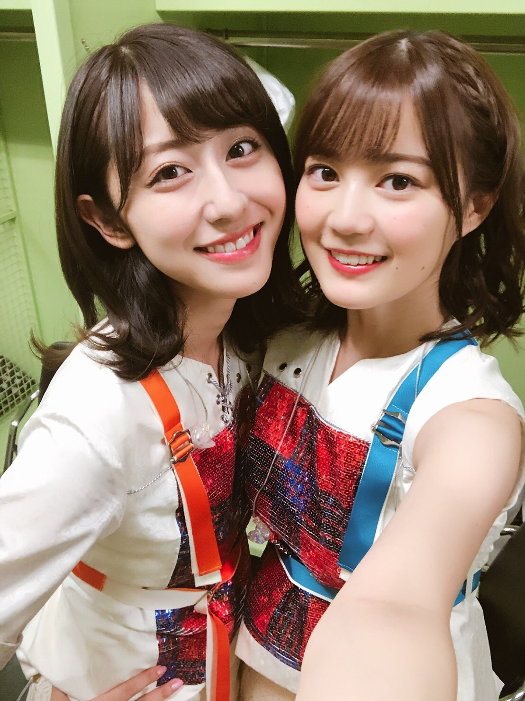
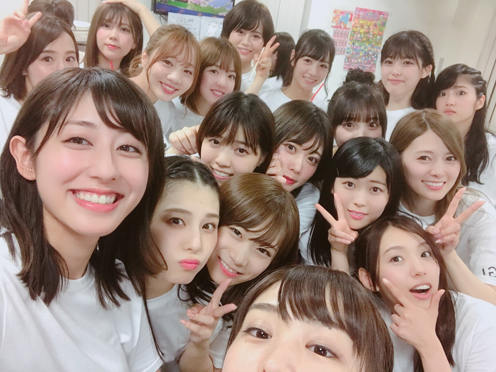
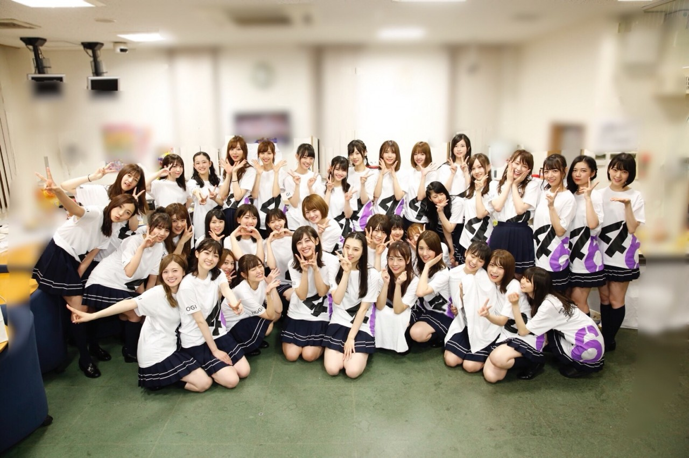

| 2018/07 10 Tue | 斎藤ちはる ラストライブ |
3日間に及ぶ神宮球場・秩父宮ラグビー場での
BIRTHDAY LIVEが終わりました！
それと同時に私と伊織にとって乃木坂46として
最後のライブが終わりました。
本当に心の底から楽しかったって思える
最高のライブでした
来てくださった皆さん
声援を送ってくださった皆さん
赤と青のサイリウムを振ってくださった皆さん
私のタオルを掲げてくださった皆さん
来られなくても応援してくださった皆さん
本当にありがとうございました！！

二会場同時開催のライブという
史上初の試みに参加させていただけたこと。
大好きなメンバーと一緒に
BIRTHDAY LIVEのステージに立てたこと。
思入れのあるアンダー曲を
沢山披露できたこと。
ファンの皆さんに直接
パフォーマンスを届けられたこと。
とっても綺麗なサイリウムの波を
最後にまた見る事ができたこと。
本当に幸せでした。

愛未は始まる前から
私の卒業を寂しがってくれて
ずっと泣きっぱなしだったけど
家に帰ってからも涙腺が崩壊しっぱなしだと報告してくれて...
そんな愛未が愛おしいです。
シークレットグラフィティーでの私たち2人だけの歌割りの
♪Tバード乗り付けて悪ガキ達がやってきたSaturday の部分は
これでもか！っていうぐらい愛未に引っ付いてこの瞬間を刻み込むように歌いました。
私の事を本当に沢山考えてくれて
支えてくれて思ってくれて。
一生ものの親友です

いくちゃんは始まる直前にわざわざ
ちー頑張るんだよ！って喝を入れに来てくれました。
今回のライブは選抜とアンダーで分かれてパフォーマンスをしていたから
一緒のステージに立つ事は無くて寂しかったけど...
「君の名は希望」をそれぞれの会場で歌っている時に、
お互いのことを考えていたことを終演後のメールで発覚して
「まさにシンクロニシティだね！」って2人で興奮していました。嬉しかったね☺︎
これからも末永く宜しくねいくちゃん！

ぎゅぎゅっとメンバー大集合！
仲良し\♡/
最後の最後に披露したガールズルールで
神宮にいたのにわざわざ秩父宮まで来てくれて
ガールズルールセンターなのに私たち2人を真ん中に立たせてくれたまいやん、本当にありがとう。
申し訳ない気持ちはありつつもとっても嬉しかった！
あと中継の関係で私の言葉を遮ってしまって本当にごめん！とわざわざ連絡をくれた玲香も本当にありがとう。
そんな些細な事まで気にしてくれる玲香がキャプテンで心から良かったです。

メンバーには沢山支えてもらいました。
みんなに出会えて本当に良かった。
乃木坂46のメンバーでいる時間も
残り一週間を切ってしまいました
最後まで大切に過ごしていきたいと思います。
--------------
そして西日本豪雨に見舞われた皆様。
ニュース等で日に日に
被害が拡大している状況を見て
物資不足や川の決壊、土砂災害等
まだ安心出来ない毎日を送られている
皆様がとても心配です。
被害に遭われた皆様の御無事をお祈りしております。
斎藤ちはる